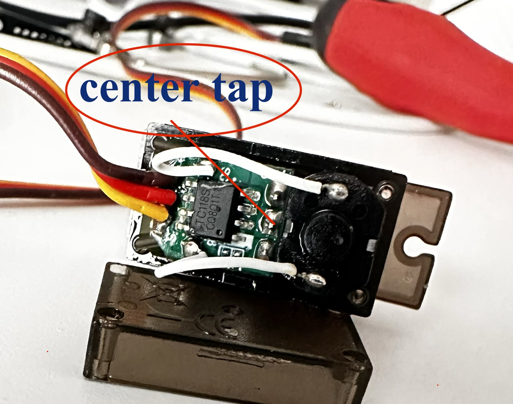
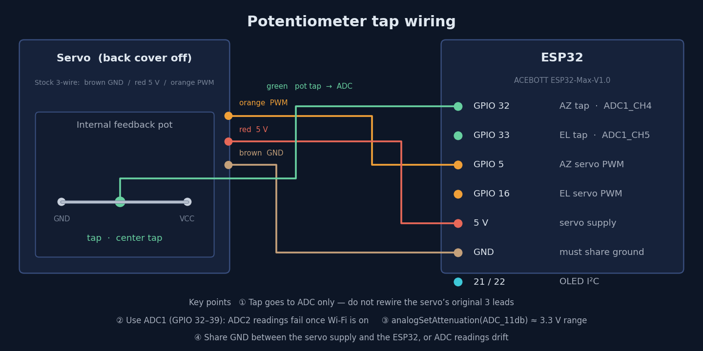
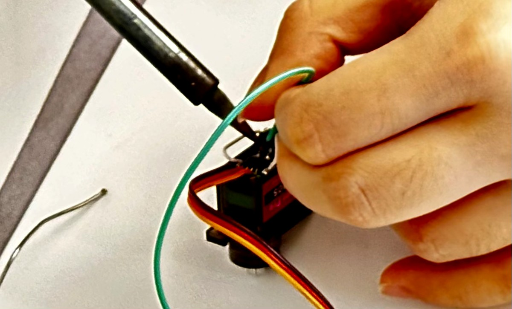
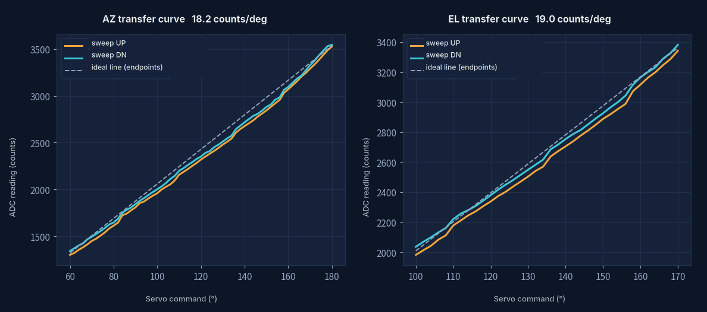
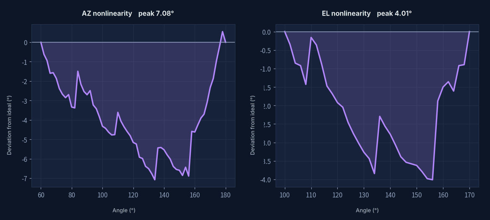
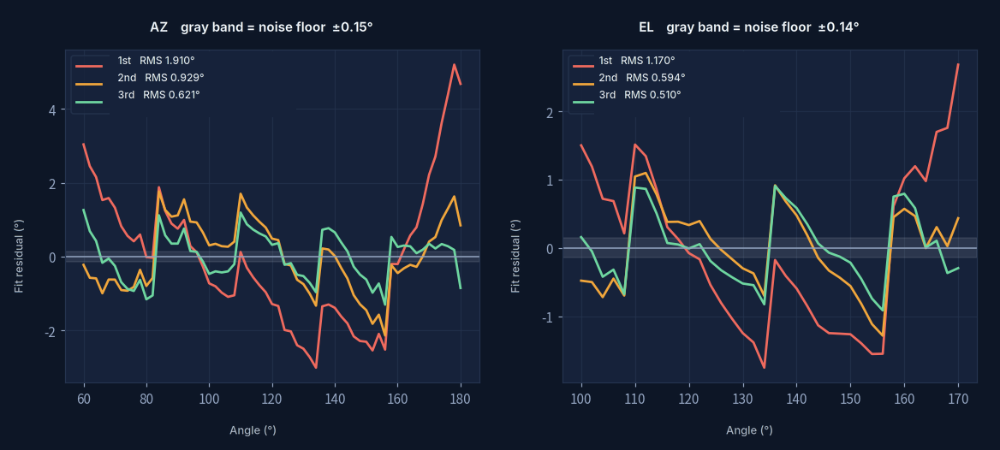
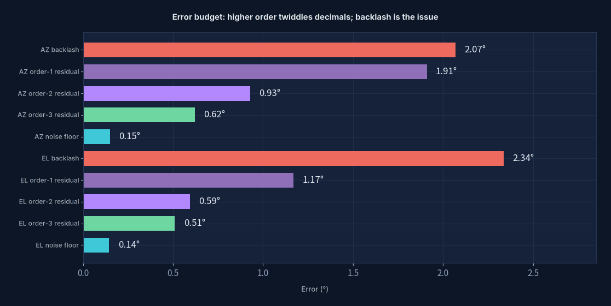
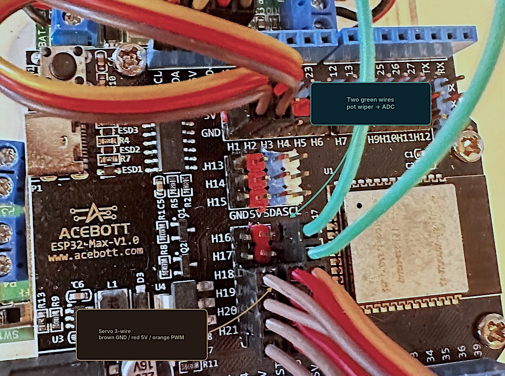

I opened up a servo and asked it where it was
Servo Calibration · turning potentiometer readings into real angles
The maths behind it → Fitting & Least Squares

Why open it up at all
A hobby servo runs open loop. You hand it a PWM pulse width, it turns to wherever that is, and then it tells you nothing. Did it get there? Is something jamming it? Do the gears have slop? From the outside you have no idea.
For a two-axis solar tracker that isn't good enough. I compute an azimuth and an elevation, and I'd like to know whether the mount actually went there.
The thing is, the feedback has been sitting inside the servo the whole time. There's a potentiometer in there that the driver board already uses for its own closed loop. Solder one wire to its center tap, run it to an ADC, and suddenly the servo has an angle output. That white wire in the photo is it. The cost is prying off the back cover and one solder joint; the payoff is not having to buy servos with feedback built in.
Wiring

The tap only gets tapped — I didn't cut any of the servo's original three wires, so the driver board carries on exactly as before. The part that actually bites you is which pin you pick:
| Signal | Pin | Note |
|---|---|---|
| AZ potentiometer tap | GPIO 32 | ADC1_CH4 |
| EL potentiometer tap | GPIO 33 | ADC1_CH5 |
| AZ servo PWM | GPIO 5 | 500–2400 µs |
| EL servo PWM | GPIO 16 | same |
| OLED | GPIO 21 / 22 | I²C SDA / SCL |
The taps have to go on ADC1 (GPIO 32–39). On the ESP32, ADC2 shares
hardware with the WiFi radio — turn WiFi on and those readings simply stop working.
A solar tracker is going to want WiFi sooner or later, so using ADC2 is a landmine you
set for yourself. Two more: call analogSetAttenuation(ADC_11db) so the range
reaches about 3.3 V, and make sure the servo supply and the ESP32 share a ground,
or every reading drifts.
How I measured it
Walk the servo through its full range in 2° steps. At every stop:
- wait 350 ms for the mechanism to settle — I found this number by trial; anything shorter and you catch it still moving
- take 64 samples 2 ms apart, record mean, min, max and standard deviation
- sweep up, then sweep back down — this second pass is the whole point, and I'll come back to why
AZ covers 60°–180° in 61 points, EL covers 100°–170° in 36. Both directions, 194 rows in all.

The whole modification is this one wire: off the potentiometer's center tap, over to an ADC. The servo's own three wires stay untouched and its driver board keeps closing its loop — I'm just eavesdropping on the feedback it was already using.
What the data says
One · It's nearly linear. Nearly isn't enough.

Sensitivity comes out at 18.2 counts/degree on AZ and 19.0 on EL, so one ADC count is about 0.055°. Resolution is not the problem. But look at how the measured curve sits against the dashed line — that's just the two endpoints joined up.

Plot the difference on its own and it's a clean bow: AZ is off by 7° in the middle, EL by 4°. Calibrate from the two ends and interpolate linearly, and that's the error you're carrying around. Which is the reason to fit a curve at all.
Two · How many orders are worth it

| Polynomial order | AZ RMS | EL RMS |
|---|---|---|
| 1st (a straight line) | 1.910° | 1.170° |
| 2nd | 0.929° | 0.594° |
| 3rd | 0.621° | 0.510° |
| 4th | 0.610° | 0.501° |
First to second halves the error. Second to third buys another 30%. Third to fourth does essentially nothing. That's the model telling you it's done — past this point you're just fitting noise. So: third order.
Three · What's actually holding us back

This chart is the most useful thing that came out of the whole experiment. After averaging 64 samples the measurement noise floor sits at 0.15°, while the third-order residual is 0.62° — four times larger. So the leftover error isn't that I can't measure precisely enough; it's that the curve won't fit any better than that.
And then look higher up the chart: mechanical backlash, 2.07°. Three times the fitting residual. Same commanded angle, approached from opposite directions, and the potentiometer reads about 38 counts apart. That's gear slop and friction. No amount of maths buys it back.
Going from 2nd order to 3rd takes the error from 0.93° to 0.62°. I get 0.31°.
Adding one line to the control loop — always approach the target from the same direction — gets me 2°.
Raising the order fiddles with decimal places. Killing the backlash is the real fight.
I only get to say that because I swept in both directions. Sweep one way and the backlash hides inside the residual, and you'd conclude your model isn't good enough and go add orders to it — which does nothing. I nearly did exactly that.
The fit
Average the two sweep directions to cancel the backlash offset, then fit ADC → angle (in use you read a count and want an angle back, so the ADC value is the independent variable, not the angle). Straight into the firmware:
// AZ axis: ADC → degrees, 3rd order, RMS 0.621°
float azRawToDeg(int raw) {
float r = (float)raw;
float r2 = r * r;
float r3 = r2 * r;
return -3.145869e-09f * r3 + 1.844709e-05f * r2
+ 2.311168e-02f * r + 5.814704e+00f;
}
// EL axis: ADC → degrees, 3rd order, RMS 0.510°
float elRawToDeg(int raw) {
float r = (float)raw;
float r2 = r * r;
float r3 = r2 * r;
return -5.985777e-09f * r3 + 4.105006e-05f * r2
- 3.685087e-02f * r + 5.706100e+01f;
}Notice the coefficients span eight orders of magnitude — the cubic term is around 10⁻⁹.
float still copes on an ESP32, but if you went higher order or wider range
you'd want to center the ADC readings before fitting, or the numerics get ugly.
What if I used a neural network instead
Same calibration data. On one side, least squares solves for three coefficients in one shot. On the other, a small 1-12-12-1 network trains by gradient descent. How close do they land?

Least squares: 0.621°. The network: 0.615° — after thirty thousand epochs. Marginally better, at enormous cost. Least squares solves a linear system; you could run it on the ESP32 itself.
Which isn't an argument against neural networks. It's an argument about knowing what you know: when you already know the shape of the curve, writing that shape into the model beats letting a network guess it. This curve is a potentiometer's voltage divider response. It was always going to be low-order and smooth, and three coefficients describe it fine. Networks earn their keep when you can't say what the shape is.
One more thing worth noticing: both sit stuck around 0.6°. They're hitting the same ceiling — the fingerprint that 2° of mechanical backlash leaves in the data. You can't change the model to fix a mechanical problem.
Worked through in → Fitting & Least Squares · Neural Networks
The actual wiring, and the files

The two green wires are the potentiometer taps coming out of the servos. And here's a trap
worth flagging: the silkscreen numbers on the board are not GPIO numbers.
In the photo the taps are plugged into the header labelled H16 / H17, while the code says
POT_AZ = 32 and POT_EL = 33. Expansion boards number their own
connectors and there's a mapping table in between. Swap boards and the same H16 might land
somewhere else entirely. Reading a silkscreen number straight into your code is the most
popular way to lose an afternoon — check the manual first.
Friendship code, please
请输入友情码
Hint: who said the line on the front page? His surname will do.
线索：首页那句话是谁说的？填他的姓。
Not quite — try again